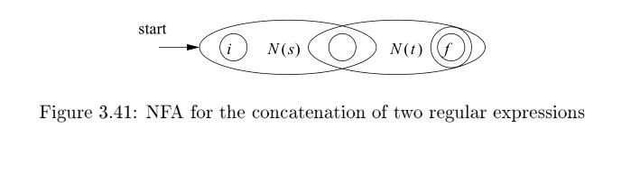
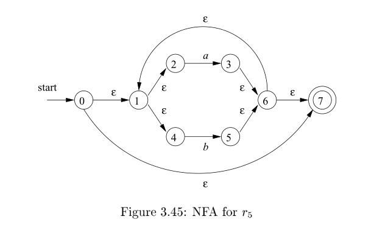

3.7 From Regular Expressions to Automata
NOTE: What this chapter describe is mainly three algorithms
Name Function Thompson's construction algorithm transforming a regular expression into an equivalent nondeterministic finite automaton (NFA) subset construction algorithm converting a nondeterministic finite automaton (NFA) into a deterministic finite automaton (DFA) which recognizes the same formal language DFA minimization transforming a given deterministic finite automaton (DFA) into an equivalent DFA that has a minimum number of states. Using the two algorithms above, a regular expression can be converted to the corresponding NFA or DFA.
The regular expression is the notation of choice for describing lexical analyzers and other pattern-processing software, as was reflected in Section 3.5. However, implementation of that software requires the simulation of a DFA, as in Algorithm 3.18, or perhaps simulation of an NFA. Because an NFA often has a choice of move on an input symbol (as Fig. 3.24 does on input a from state 0) or on $\epsilon$ (as Fig. 3.26 does from state 0), or even a choice of making a transition on $\epsilon$ or on a real input symbol, its simulation is less straightforward than for a DFA. Thus often it is important to convert an NFA to a DFA that accepts the same language.
3.7.1 Conversion of an NFA to a DFA
NOTE: The subset construction explained in this book is too abstract to grasp, wikipedia's explanation about this algorithm is more intuitionistic.
The general idea behind the subset construction is that each state of the constructed DFA corresponds to a set of NFA states. After reading input $a_1 a_2 \dots a_n$, the DFA is in that state which corresponds to the set of states that the NFA can reach, from its start state, following paths labeled $a_1 a_2 \dots a_n$.
It is p ossible that the number of DFA states is exponential in the number of NFA states, which could lead to difficulties when we try to implement this DFA. However, part of the p ower of the automaton-based approach to lexical analysis is that for real languages, the NFA and DFA have approximately the same number of states, and the exponential behavior is not seen.
Algorithm 3.20 : The subset construction of a DFA from an NFA.
INPUT: An NFA N .
OUTPUT: A DFA D accepting the same language as N .
METHOD: Our algorithm constructs a transition table $D_{tran}$ for D . Each state of D is a set of NFA states, and we construct $D_{tran}$ so D will simulate "in parallel" all possible moves N can make on a given input string. Our first problem is to deal with $\epsilon$-transitions of N properly. In Fig. 3.31 we see the definitions of several functions that describe basic computations on the states of N that are needed in the algorithm. Note that s is a single state of N , while T is a set of states of N .
| OPERATION | DESCRIPTION |
|---|---|
| $\epsilon-closure(s)$ | Set of NFA states reachable from NFA state s on $\epsilon$-transitions alone. |
| $\epsilon-closure(T)$ | Set of NFA states reachable from some NFA state s in set T on $\epsilon$-transitions alone; $= \cup _{s \in T} {\epsilon-closure(s)}$ |
move(T, a) |
Set of NFA states to which there is a transition on input symbol a from some state s in T . |
Figure 3.31: Operations on NFA states
We must explore those sets of states that N can be in after seeing some input string. As a basis, before reading the first input symbol, N can be in any of the states of $\epsilon-closure(s_0)$, where $s_0$ is its start state. For the induction, suppose that N can be in set of states T after reading input string x. If it next reads
input a, then N can immediately go to any of the states in $move (T , a)$. However, after reading a, it may also make several $\epsilon-transitions$; thus N could be in any state of $\epsilon-closure(move(T, a))$ after reading input xa. Following these ideas, the construction of the set of D 's states, $D_{states}$, and its transition function $D_{tran}$, is shown in Fig. 3.32.

The start state of D is $\epsilon-closure(s_0)$, and the accepting states of D are all those sets of N 's states that include at least one accepting state of N . To complete our description of the subset construction, we need only to show how $\epsilon-closure(T)$ is computed for any set of NFA states T . This process, shown in
Fig. 3.33, is a straightforward search in a graph from a set of states. In this case, imagine that only the $\epsilon$-labeled edges are available in the graph.
.jpg)
3.7.4 Construction of an NFA from a Regular Expression
We now give an algorithm for converting any regular expression to an NFA that defines the same language. The algorithm is syntax-directed, in the sense that it works recursively up the parse tree for the regular expression. For each sub expression the algorithm constructs an NFA with a single accepting state.
NOTE: bottom-up
NOTE: How to build a parse tree for a regular expression?
Algorithm 3.23 : The McNaughton-Yamada-Thompson algorithm to convert a regular expression to an NFA.
INPUT: A regular expression r over alphabet $\Sigma$.
OUTPUT: An NFA N accepting L(r ).
METHOD: Begin by parsing r into its constituent subexpressions. The rules for constructing an NFA consist of basis rules for handling subexpressions with no operators, and inductive rules for constructing larger NFA's from the NFA's for the immediate subexpressions of a given expression.
BASIS: For expression $\epsilon$ construct the NFA

Here, i is a new state, the start state of this NFA, and f is another new state, the accepting state for the NFA.
For any subexpression a in $\Sigma$, construct the NFA

where again i and f are new states, the start and accepting states, respectively. Note that in both of the basis constructions, we construct a distinct NFA, with new states, for every occurrence of $\epsilon$ or some a as a subexpression of r.
INDUCTION: Suppose N (s) and N (t) are NFA's for regular expressions s and t, respectively.
a) Suppose r = s|t. Then N (r ), the NFA for r , is constructed as in Fig. 3.40. Here, i and f are new states, the start and accepting states of N (r ), respectively. There are $\epsilon$-transitions from i to the start states of N (s) and N (t), and each of their accepting states have $\epsilon$-transitions to the accepting state f . Note that the accepting states of N (s) and N (t) are not accepting in N (r). Since any path from i to f must pass through either N (s) or N (t) exclusively, and since the label of that path is not changed by the $\epsilon$'s leaving i or entering f , we conclude that N (r ) accepts $L(s) \cup L(t)$, which is the same as L(r ). That is, Fig. 3.40 is a correct construction for the union operator.

b) Suppose r = st. Then construct N (r ) as in Fig. 3.41. The start state of N (s) becomes the start state of N (r ), and the accepting state of N (t) is the only accepting state of N (r ). The accepting state of N(s) and the start state of N (t) are merged into a single state, with all the transitions in or out of either state. A path from i to f in Fig. 3.41 must go first through N (s), and therefore its label will begin with some string in L(s). The path then continues through N (t), so the path's label finishes with a
string in L(t). As we shall so on argue, accepting states never have edges out and start states never have edges in, so it is not possible for a path to re-enter N (s) after leaving it. Thus, N (r ) accepts exactly L(s)L(t), and is a correct NFA for r = st.

c) Suppose $r = s^$. Then for r we construct the NFA N (r ) shown in Fig. 3.42. Here, i and f are new states, the start state and lone accepting state of N (r ). To get from i to f , we can either follow the introduced path labeled $\epsilon$, which takes care of the one string in $L(s)^0$ , or we can go to the start state of N(s), through that NFA, then from its accepting state back to its start state zero or more times. These options allow N (r ) to accept all the strings in $L(s)^1$, $L(s)^2$, and so on, so the entire set of strings accepted by N (r ) is $L(s^)$.

d) Finally, suppose r = (s). Then L(r ) = L(s), and we can use the NFA N (s) as N (r ).
NOTE: Implementing a regular expression engine is far more complex than the algorithm described here.
The method description in Algorithm 3.23 contains hints as to why the inductive construction works as it should. We shall not give a formal correctness proof, but we shall list several properties of the constructed NFA's, in addition to the all-important fact that N (r ) accepts language L(r ). These properties are interesting in their own right, and helpful in making a formal proof.
N (r )has at most twice as many states as there are operators and operands inr. This bound follows from the fact that each step of the algorithm creates at most two new states.N (r )has one start state and one accepting state. The accepting state has no outgoing transitions, and the start state has no incoming transitions.- Each state of
N (r )other than the accepting state has either one outgoing transition on a symbol in $\Sigma$ or two outgoing transitions, both on $\epsilon$.
Example 3.24 : Let us use Algorithm 3.23 to construct an NFA for $r = (a | b) ^*abb$. Figure 3.43 shows a parse tree for r that is analogous to the parse trees constructed for arithmetic expressions in Section 2.2.3. For subexpression $r_1$ , the first a, we construct the NFA:


State numbers have been chosen for consistency with what follows. For $r_2$ we construct:
We can now combine $N (r_1)$ and $N (r_2)$, using the construction of Fig. 3.40 to obtain the NFA for $r_3 =r_1|r_2$; this NFA is shown in Fig. 3.44.

The NFA for $r_4= (r_3)$ is the same as that for $r_3$. The NFA for $r_5= (r_3)$ is then as shown in Fig. 3.45. We have used the construction in Fig. 3.42 to build this NFA from the NFA in Fig. 3.44.

Now, consider subexpression $r_6$, which is another a. We use the basis construction for a again, but we must use new states. It is not permissible to reuse the NFA we constructed for $r_1$, even though $r_1$ and $r_6$ are the same expression. The NFA for $r_6$ is:

To obtain the NFA for $r_7= r_5r_6$, we apply the construction of Fig. 3.41. We merge states 7 and $7^{'}$, yielding the NFA of Fig. 3.46. Continuing in this fashion with new NFA's for the two subexpressions b called $r_8$
and $r_{10}$, we eventually construct the NFA for tha$r = (a | b) ^*abb$ that we first met in Fig. 3.34.